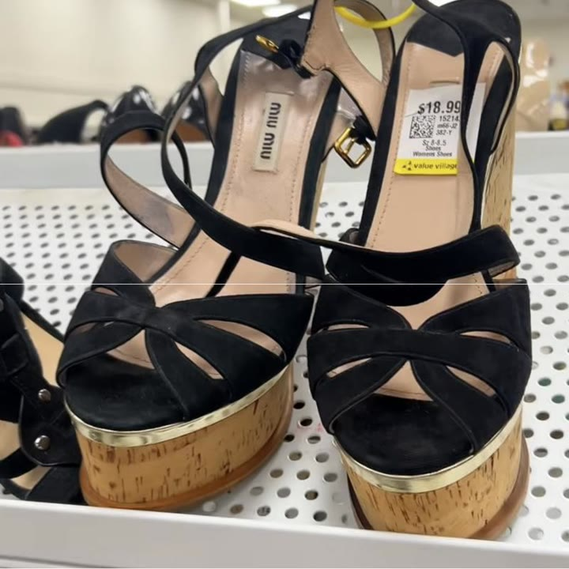
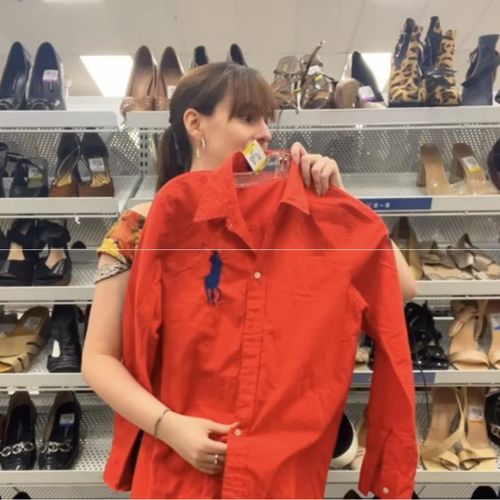
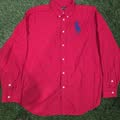

Miu Miu black suede cork platform wedge sandals (Spring/Summer 2015)
I was literally shaking. But if they weren't Miu Miu, I wouldn't have picked them up.
 Similar on eBay →C$282.06
Similar on eBay →C$282.06I found Miu Miu platform sandals, likely from Spring/Summer 2015, for $18.99, and I left them behind because they don't match my wardrobe. Also on the rack: Saint Laurent Rive Gauche, a red Ralph Lauren shirt, Holt Renfrew and an American Gods crew jacket. The one thing that came home was a pair of $30 red and black heels.
Thrifted pieces are one of a kind, so these are the closest matches I could find, resale and new. Some links are affiliate links, and I may earn a small commission at no cost to you.

I was literally shaking. But if they weren't Miu Miu, I wouldn't have picked them up.
Similar on eBay →C$282.06
I look like I work at a ketchup plant. A nice shirt, just not my style.

Similar on eBay →C$63.77I have a budget of $163 left of $200 to thrift this fall. Recently, we did not thrift these red and black heels. Today, we're looking for a chunky oxford, ideally under $20, as well as still hunting for an art easel. Let's go to the thrift store and see what we can find.
I am actually shaking holding this find. These are platform Miu Miu sandals for $18. And from my research, I think these are from the 2015 spring-summer collection, which would mean they would retail for almost $1,000 Canadian around 11 years ago. But let's inspect closer to see if we think they're real.
To start our inspection in the thrift store, the first thing we're going to look at is the tag on the inside of the shoe. And we're not only looking at the logo, but the stitching above and below the logo. Does the stitching match the shoe and is the thread colour correct?
Now let's inspect the bottom of the shoe. We like that the logo is on the shoe and looks clean. Normally, I'd like to look closely at the Made in Italy, but it's super worn off, which is also OK. It's an 11-year-old shoe.
Now the overall construction. These shoes are in fantastic shape for being 11 years old. They feel very solid and well-assembled. And they're a fairly unique piece. I'm searching online, but sometimes when pieces have this complex design, it's not as easy to do. So for $18.99, I'm thinking these could be real and are definitely worth putting in our cart. I'm thinking about them as we keep shopping.
Because holy moly, take a look at this feather coat. They kind of look like mini bronze spoons. OK, with the tags on. And it's priced under $20, so will I be finding a jacket to wear to parties in the winters? Or will I end up giving Abominable Snowman, specifically the one named Bumble?
Oh, my goodness. I convinced myself to try this on just in case it could be magical, because you never know. It really does look like I'm a dish drawer with a bunch of little spoons hanging off of me. But the actual white jacket is kind of cool, so I thought, what if I remove the spoon, like the little things? And the funny thing is, I actually like what they were trying to do. It's just the fabric of the spoon things doesn't work for me.
We've gone from winter to summer. This vintage nightie top and/or dress. I'm never sure where these types of pieces are supposed to hit on my body. I'm about 5'9", but honestly, I put this over my head and off so fast. That tends to be kind of my gut reaction to knowing that something probably isn't for me, even if it's pretty, because I wasn't super excited to stay in this piece.
Now, this is funny. This is a stunt jacket from the television show American Gods. And I have a personal connection to American Gods. I worked as a production assistant on one of their shoot days, maybe even two or three. Thank you. But I only worked a few days on season one. This is from season two.
Typically, when a show wraps, they give out crew gifts, so this must have been the crew gift for season two, specifically for a person with the initials JFH in the stunts department. Shout out to that person for donating their stuff. That's awesome. Even though this is a really cool jacket, stunts is not my department, so I think I'm gonna say no to this one.
Next, we have a vintage Victoria's Secret faux silk style house gown. Fun fact: I actually worked as a cashier at Victoria's Secret in high school in the Eaton Centre in Toronto, much to my parents' horror. I don't know if I love the colour. It's a bit of a muted green, but I will say these older Victoria's Secret pieces tend to last quite a long time, so it's definitely worth a shot trying on.
It's fine. I don't think it's outstanding, and I struggle with the lengths of these things, but I do like the detailing on the arm, and it is $9, so let's put it in our cart and think about it, because it might just be nice to have to put on and get around the house.
Next, if you're Canadian, you're gonna know what this brand is. This is a vintage Holt Renfrew dress. For American friends, Holt Renfrew is like a Saks Fifth Avenue type store in Canada, but judging by my initial reaction, I don't think I'm a huge fan of this dress. I actually think I would've really liked this dress in like high school, but it's just a bit too short, and the waistline isn't really my style anymore.
I wonder if this logo is gonna be a bit too aggressively loud for me, but I love the idea of a red button-down shirt. We are gonna try and be open-minded to the logo. I'm not a huge logo person in general. Oh, whatever I thought this was gonna give, it is not. I actually look like I work at some sort of food inspection plant, maybe a ketchup plant. Either way, this does not suit my personal style, even though it's a nice shirt, but yeah, I'm gonna leave this behind for someone else to thrift.
I was pretty excited about this skirt, but the fabric is so thick and heavy, which I know is something most people love, but for me, it's actually a downside. I really don't like wearing heavy clothes. Very cute Ralph Lauren belt buckle. I wonder if they also donated the shirt.
What is this? Is this a super pretty jewellery box, or is it ugly? Let's see the inside, and oh, unfortunately, it's missing some stones on top, so I think that answers it for us. I just don't know. Wow, that is quite the outfit.
I'm stumped on what these are for. Are these for napkins? The person I was with said that they were not for napkins, but they weren't sure either. The person I was with said that they're for toast. Is it toast or is it napkin? Either way, I don't need it.
I love the portrait of the little lady, but I don't love the shape of the clock. Is this shirt supposed to be a compliment or an insult? The photos of people's pets always tug at my heart. Look at these three. I'm sure they were very loved. They were so sweet.
And the Melissa jelly heels are still here from yesterday, but guess what else are still here? These freaking shoes I can't stop thinking about, but they want $30. Okay, let's add them to our cart and look over everything.
I love the white fluff, but I don't love the gold accents, so let's say it's a pass, and I just don't think the cut of this shirt is right for me or the large logo. It doesn't really match my personal style. Oh, and there's a letter on the sleeve. I gave the vintage dress a second look, but I trust my gut and this is a no.
This Victoria's Secret robe is the second hardest decision because I do like it and I need one. It's like a house coat, but I think I can find one in a better colour.
But now the hardest decision of them all, the Miu Miu shoes. Now, something I try really hard to do is not be blinded by brands. When I first picked up these shoes, I was literally shaking to find Miu Miu for $18. So here's my trick. I need to look at these shoes as if they are not Miu Miu.
I need to think that they are basically Forever 21 and decide: if these shoes were from Forever 21, this specific style with the cork, with the velvet, with the gold, would I buy these and would they match my wardrobe? And my honest answer is, if these were not Miu Miu, I don't think I would have even picked these up off the rack because they don't match my wardrobe. They don't match my style.
And frankly, we are here looking for a fall heel, which we didn't find any of today, which is kind of funny. And these are extremely summer. I have a pair of MCM Worldwide platforms that are like this that I really love. I thrifted these back in 2022 for 9 bucks, an example of a platform style that is just a bit more aligned with my other clothing options.
So I think the thrift gods left these Miu Miu shoes for $18 for someone else, which means that I'm gonna leave these Miu Miu platforms behind. Because the thrift gods already blessed me with a pair of platform designer heels that I really like.
And when I come across really expensive brands like Miu Miu or Saint Laurent in the thrift store, I do try and leave them behind for other people if I really don't think I'm gonna wear them and just not buy it for the brand. Because it's so fun to find designer that I wanna make sure other people have that experience too.
So please don't hate me for leaving the $18 Miu Mius behind. I promise I will check in on them to make sure they find a good home. If they're still at the store by the time that they're supposed to be tossed or given to whatever type of next stage life they'd go to, I will get them and do a giveaway. But for now, let's leave them to see if someone else wants them.
But wait, it's not over. Because these shoes, I first found them two weeks ago, I tried them on the other day. They're a little bit big, but you guys gave me such excellent tips about how to make these heels fit since they're only half a size too big.
And even though they're $30, which is actually hilarious that they are more expensive than the Miu Mius, truly only at the thrift store are these shoes more expensive than Miu Mius. I like them so much that I'm gonna bite the bullet and buy them for $30. And even worse, I do not have a coupon today.
So these heels are gonna be my most expensive purchase so far, but I think the colouring is so unique and it is the closest that I'm going to find to the Matthieu Blazy Chanel. We will have a budget of $133 left to thrift for fall.
Now, also these videos are substantially longer than normal. Usually my videos are between one and three minutes and these are more between like seven and 10 minutes. So please tell me if you like these longer videos. They do take quite a bit longer to edit but I'm really enjoying them. But you guys and what you like always comes first. So please let me know what you enjoy and how you feel about these new style of videos too. I'm also happy to do a mix of both and I probably will.
We are still on a hunt for the art easel and now a chunky pair of oxford loafers. Wait, not loafers. You know what I mean. My dream pair are from this French brand, Jonak. I hope I didn't pronounce that wrong, I'm so sorry. So subscribe and come back soon to see if we can find something similar at the thrift store on a budget.
And as always, I love to hear what you guys have found and said no to at the thrift store. So please let me know in the comments. And most of all, tell me, did I make the right or wrong decision with the Miu Miu platforms? Tell me what you would have done if you found these for $18. That's all for now.